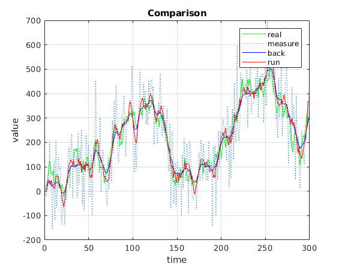
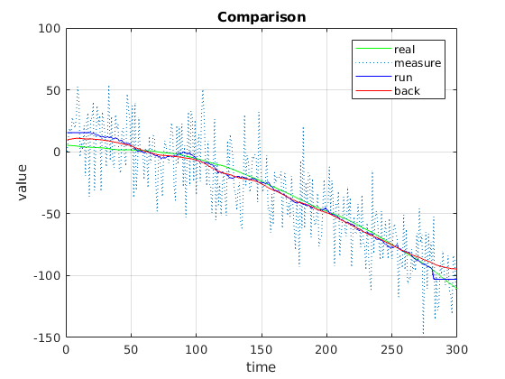
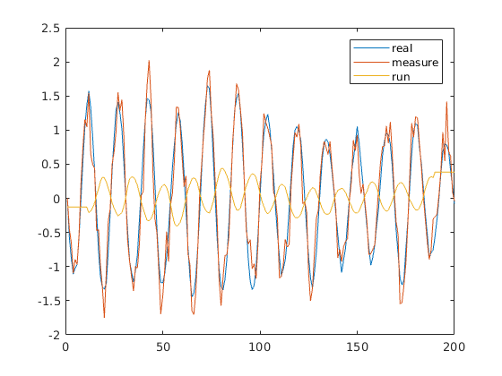
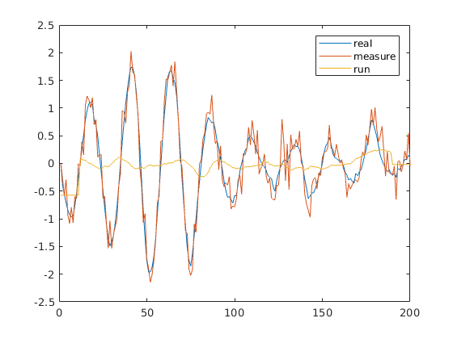
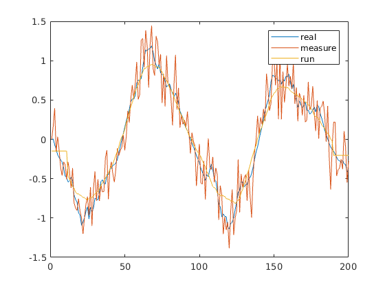

Contents
Part 1
close all
N = 300;
x1 = 10;
sw2 = 28^2;
sn2 = 97^2;
[x, z] = trajgen(x1, sqrt(sw2), sqrt(sn2), N);
alpha = getalpha(sw2,sn2);
M = ceil( (2-alpha)/alpha );
if rem(M,2)==0
M = M-1;
end
r = runningmean(z,M);
t = 1:N;
e = expmean(x1, alpha, z);
xb = expmeanBack(alpha, e);
E = {e, 'exp'};
X = {x, 'real'};
Xb = {xb, 'back'};
Z = {z, 'measure'};
R = {r, 'run'};
plotting(t, X, Z, Xb, R);
[Id_xb, Iv_xb] = getindic(z, xb);
[Id_r, Iv_r] = getindic(z, r);
display(strcat('Id_xb-Id_r=',num2str(Id_xb-Id_r)));
display(strcat('Iv_xb-Iv_r=',num2str(Iv_xb-Iv_r)));
Id_xb-Id_r=34345.6308
Iv_xb-Iv_r=-284597.2682

Part 2
close all
N = 300;
sn2 = 500;
sa2 = 10;
T = 0.1;
v1 = 0;
x1 = 5;
[x, z] = trajgen_acc(x1, sqrt(sn2), sqrt(sa2), N, T, v1);
t = 1:N;
display(strcat('Variances are: sa2=',num2str(sa2),', sn2=',num2str(sn2)))
M = 40;
alpha = 2/(M+1);
display(strcat('M=',num2str(M)));
display(strcat('alpha=',num2str(alpha)));
r = runningmean(z,M);
e = expmean(x1, alpha, z);
xb = expmeanBack(alpha, e);
E = {e, 'exp'};
X = {x, 'real'};
Xb = {xb, 'back'};
Z = {z, 'measure'};
R = {r, 'run'};
figure(1)
plotting(t,X,Z,R,Xb);
[Id_xb,Iv_xb, Id_r,Iv_r] = optindic(x1, z, M);
display(strcat('Id_xb-Id_r=',num2str(Id_xb-Id_r)));
display(strcat('Iv_xb-Iv_r=',num2str(Iv_xb-Iv_r)));
display(strcat('Id_xb=',num2str(Id_xb)));
display(strcat('Iv_xb=',num2str(Iv_xb)));
display(strcat('Id_r=',num2str(Id_r)));
display(strcat('Iv_r=',num2str(Iv_r)));
Variances are: sa2=10, sn2=500
M=40
alpha=0.04878
Id_xb-Id_r=1738.8094
Iv_xb-Iv_r=-539.2615
Id_xb=150241.2725
Iv_xb=0.93755
Id_r=148502.463
Iv_r=540.1991

Secondary trajectory
close all
N = 200;
x = zeros(1,N);
z = zeros(1,N);
A = zeros(1,N);
sigmaW = 0.08;
sigmaN = sqrt(0.05);
M = 23;
T = M/1.5;
[ r, x, z ] = runfromperiod(T, sigmaW, sigmaN, M);
t = 1:N;
figure(1)
plot(t,x, t,z, t,r);
legend('real', 'measure', 'run');
T = M;
[ r, x, z ] = runfromperiod(T, sigmaW, sigmaN, M);
figure(2)
plot(t,x, t,z, t,r);
legend('real', 'measure', 'run');
T = 4*M;
[ r, x, z ] = runfromperiod(T, sigmaW, sigmaN, M);
figure(3)
plot(t,x, t,z, t,r);
legend('real', 'measure', 'run');
  